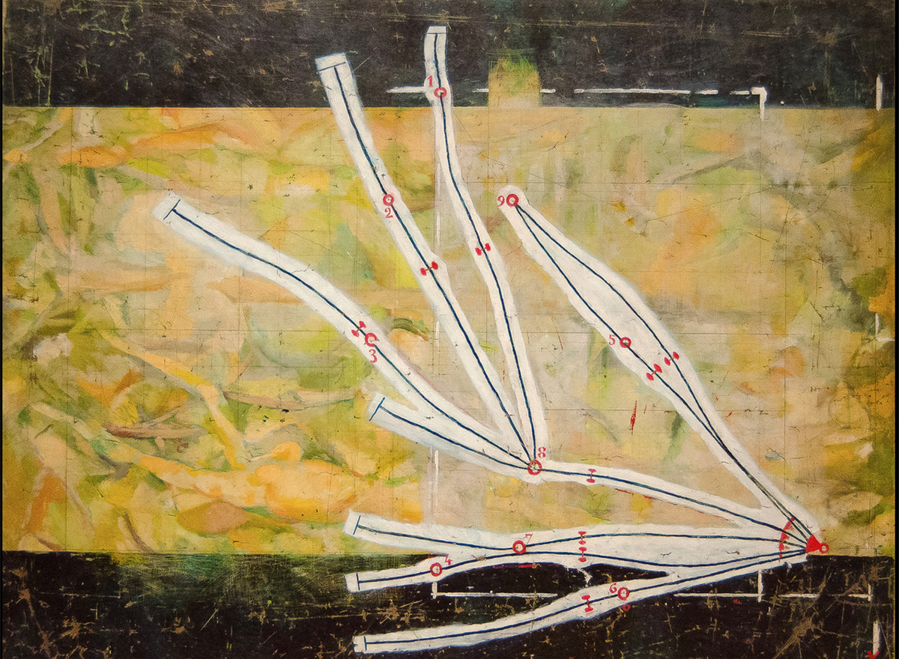

Poetic Measuring Device
create & control randomness using p5.js
诗意测量工具
使用 p5.js 创造和控制随机性
create & control randomness using p5.js
使用 p5.js 创造和控制随机性
What is being measured?
How to communicate the thing being measured?
How does a user interface the device?
测量的是什么？
被测量的东西是如何被表达的？
用户如何使用这个工具？
Marcel Duchamp. 1913 – 14.
"If a straight horizontal thread one meter long falls from a height of one meter onto a horizontal plane twisting as it pleases, [it] creates a new image of the unit of length."

Network of Stoppages. Marcel Duchamp. 1914.
Tsching Heisch. 1980 – 81.
"I'm not trying to make concepts about how to pass time. I'm just passing time."

Adrien Segal. 2015.

For more examples, see references 3-7.
Create a digital measuring device that:
Your project will have two parts: